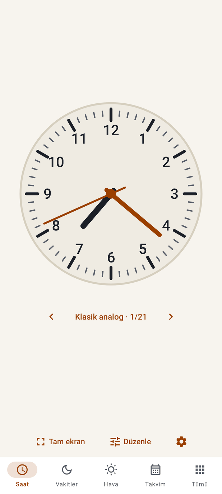
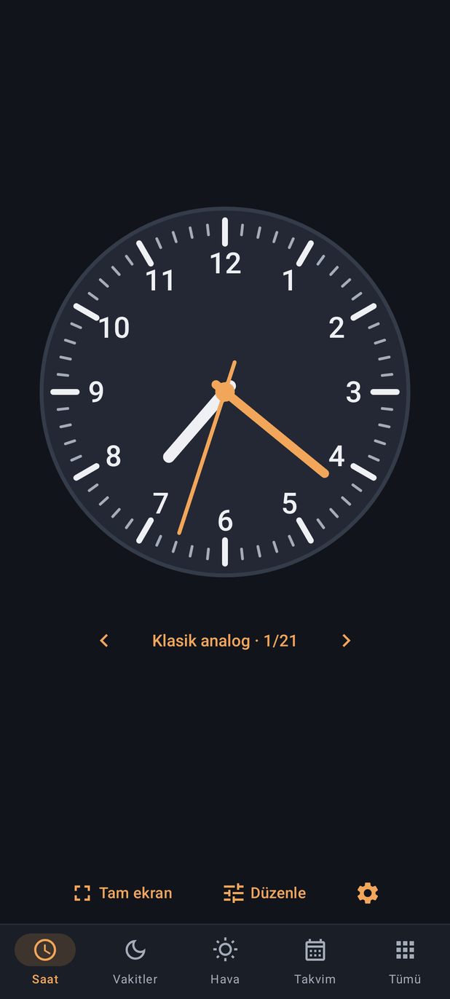
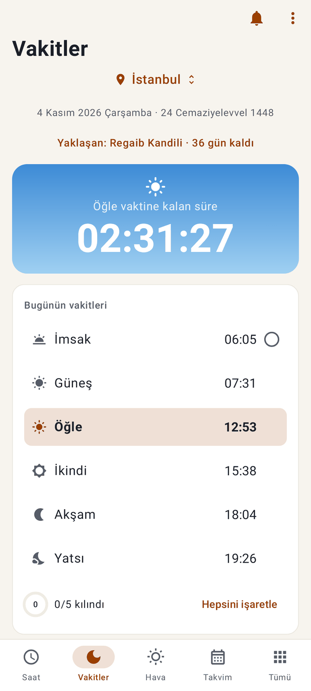
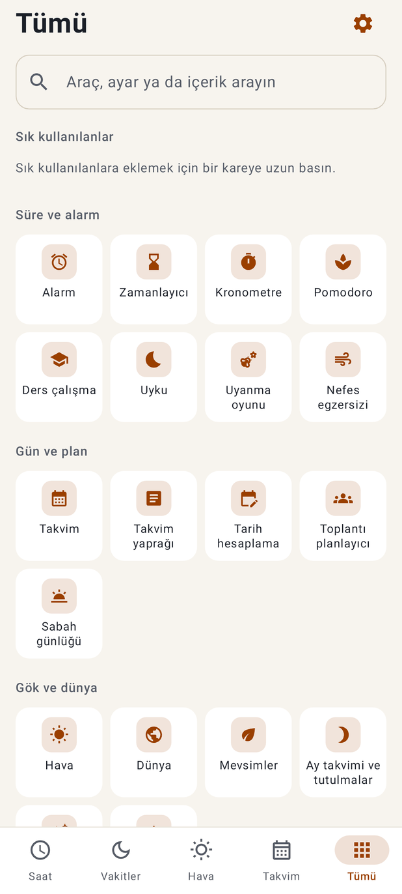
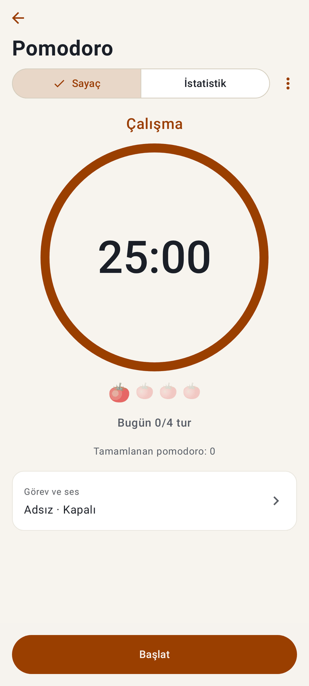
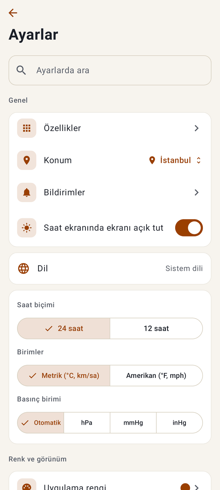
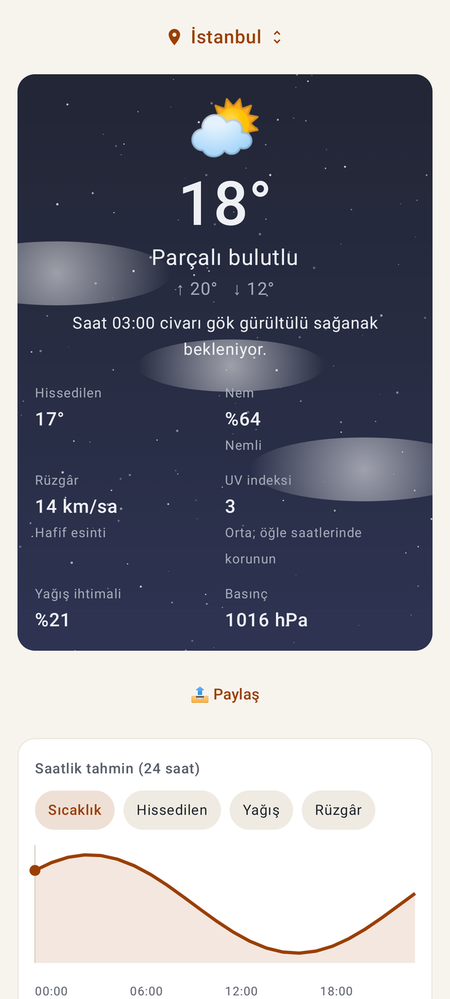

Her şey aynı beyaz kutu
Saf beyaz kart, 1 dp kenarlık, aynı köşe ve boşluk. Krem zeminde form doldurma hissi.
tr-ayarlar · tr-alarm · tr-uyku · tr-rozetlerSAAT TARİH · DOĞAL TASARIM ÖNERİSİ · 4 KASIM 2026
Sahibin sözü: "Tüm tasarımlar aşırı robotik, daha doğal tasarımlar lazım."
Kısa cevap. İskelet iyi; robot hissini yüzey veriyor. Her şey aynı beyaz kutuda, aynı kalın yazıyla, hazır simgelerle ve tek turuncu renkle çiziliyor.
Öneri: yüzeyi takvim yaprağının kâğıdı, günün göğü ve lamba ışığıyla yeniden boyamak. İşin çoğu iki platformdaki ortak belirteç ve bileşen dosyalarında; ekranları tek tek yeniden yazmak gerekmez. Gezinme kararı (kişisel alt çubuk ve "Tümü") olduğu gibi kalır.
Ayrıntılar, değerler ve dosya listesi: docs/dogal-tasarim/README.md. "Şimdi" görüntüleri Android ekran görüntüleridir (iPhone aynı belirteçleri kullanır). Sağ üstteki düğme koyu temayı gösterir.
1 · TEŞHİS
216 ekran görüntüsünden 56'sı incelendi (24'ü tek tek, 32'si dörtlü sayfalarda), ayrıca 33 widget. Altta görüntü adları.
Saf beyaz kart, 1 dp kenarlık, aynı köşe ve boşluk. Krem zeminde form doldurma hissi.
tr-ayarlar · tr-alarm · tr-uyku · tr-rozetlerAndroid'de 274 Material dolu simge. Tümü'ndeki 15 kare birbirinin kopyası.
tr-araclar · tr-ozellikler⛅ 📤 📅 📍 🕓 🍅 🕋 🔒: parlak, üç boyutlu, her markada başka görünüyor.
tr-hava · tr-alarm · tr-pomodoro · tr-kible · tr-hiit237 yarı kalın kullanım; bir ekranda dört kalın turuncu satır yarışıyor.
tr-alarm · tr-vakitlerHazır doygun maviler; koyu tema mavi-gri (#11141A), gece değil terminal gibi.
tr-vakitler · tr-dunya-koyu · tr-saat-koyuHer yerde 16 ve 14; bir yanda koca boşluk, öbür yanda sıkışık paragraf; karışık hizalama.
tr-saat · tr-zamanlayici · tr-takvimOnay işaretli bölmeli düğme, kalın anahtar, çerçeveli metin kutusu.
tr-ayarlar · tr-pomodoro · tr-uykuDüz yüzeyler; hava bulutları sert kenarlı elips ve yazıya biniyor; çöp adam figürler.
tr-hava · tr-namaz-rehberi-cizimlerKalın siyah çentik, düz kadran, gölgesiz ibre. Uygulamanın ilk yüzü.
tr-saat · tr-kurulumSayı, bağlantı, simge, anahtar, hap: hepsi #9A3F00. Önemli olan seçilmiyor.
tr-uyku · tr-alarm2 · ŞİMDİ VE ÖNERİLEN
Önerilen çizimler HTML ve CSS ile, önerilen belirteçlerle çizildi. Rakamlar ve metinler ekran görüntüleriyle aynı.


Dials.kt, ClockScreen.kt, MainActivity.kt TabBar · Dials.swift, AnalogClock.swift, HomeView.swift, SaatTarihApp.swift

4 Kasım 2026 Çarşamba · 24 Cemaziyelevvel 1448
PrayerScreen.kt, WorshipExtras.kt:322 skyColors · PrayerTab.swift, WorshipExtras.swift:312

AllScreen.kt, Components.kt IconBox · AllView.swift, Components.swift

Bugün 0 / 4 tur
ToolVisuals.kt (ProgressRing, RoundDots), PomodoroScreen.kt · ToolVisuals.swift, ToolsTab.swift

SettingsScreen.kt, Components.kt (SoftSegmented, SoftSwitch) · InfoViews.swift, Components.swift

AnimatedBackground.kt:268 clouds, WeatherScreen.kt · AnimatedBackground.swift, WeatherView.swift
3 · BELİRTEÇLER
Bütün yazı renkleri iki temada ≥4,5:1. Bugünkü 24 uygulama rengi ve 8 atmosfer bu taban renklerin üstünde çalışmaya devam eder.
| bg zemin | #F6F0E4 | ||
| surface kart | #FFFBF4 | ||
| surface2 çukur, iz | #EDE4D3 | ||
| line ince çizgi | #E2D6C1 | ||
| text yazı | #2B2520 | 13,3:1 | |
| muted soluk yazı | #6A5F55 | 5,5:1 | |
| faint yalnız süs | #A89A88 | yazıda yok | |
| accent kiremit | #9A3F00 | 6,0:1 | |
| accentSoft seçili zemin | #F3E1CC | ||
| gold altın | #835A0D | 5,4:1 | |
| sage adaçayı | #4A6B47 | 5,3:1 | |
| sky gök | #3A6889 | 5,3:1 | |
| dusk akşam moru | #7A4760 | 6,4:1 | |
| ok başarı | #2E6A39 | 5,7:1 | |
| err hata | #A3311B | 6,1:1 |
Sağdaki sayı: zemine karşı karşıtlık.
| bg zemin | #14151C | ||
| surface kart | #1D1E27 | ||
| surface2 çukur, iz | #272834 | ||
| line ince çizgi | #343542 | ||
| text yazı | #F1EADF | 15,2:1 | |
| muted soluk yazı | #B4AA9B | 7,9:1 | |
| faint yalnız süs | #6E675E | yazıda yok | |
| accent lamba turuncusu | #F2A65A | 9,0:1 | |
| accentSoft seçili zemin | #3B2A1C | ||
| gold altın | #E2B65C | 9,6:1 | |
| sage adaçayı | #9CC294 | 9,2:1 | |
| sky gök | #8DB8DA | 8,7:1 | |
| dusk akşam moru | #D69BB5 | 8,0:1 | |
| ok başarı | #8FD3A0 | 10,4:1 | |
| err hata | #FF9F8A | 9,2:1 |
Sağdaki sayı: zemine karşı karşıtlık.
Seçili yerde Güneş'in yüksekliğine göre. Bu tonların üstünde soluk yazı bile ≥4,5:1.
Açık gökte mürekkep, koyu gökte krem yazı; en düşük karşıtlık 5,2:1.
Literata (SIL OFL 1.1): Latin, Latin Ext, Kiril, Yunan, Vietnam; tablo rakamı (tnum) var. Arapça, Urduca, Farsça, Japonca, Korece, Çince, Tayca, Hintçede başlıklar sistem yazısında.
Sayfa kenarı 20 · kart içi 20 · ilgili öğeler 8–12 · ayrı konular 24–32 · satır en az 52 · dokunma 48 dp / 44 pt.
Açıkta sıcak, yumuşak gölge (kahve tonlu, %6–10). Koyuda gölge yok; kart bir ton açık, üst kenarda %5 ışık çizgisi. Kenarlık yalnız giriş alanlarında.
150 ms basma · 250 ms kart ve sekme · 400 ms sayfa · 1.200 ms gökyüzü. Eğri cubic-bezier(0.2, 0.8, 0.2, 1). Basınca %97'ye küçülme. "Hareketi azalt" açıksa yalnız soluklaşma.
24×24, 1,75 çizgi, yuvarlak uç; tek ayrıntı ikinci renkte (altın). Bugünkü icons.json (24 simge) bu kurallarla ~64'e çıkar.
8 köşeli yıldız (hatem), %6–10 saydam, ince çizgi, hiç oynamaz.
Yalnız ibadet ekranları, vakit sayacı köşesi, Kur'an ve dua başlıkları, tebrik kartları. Kur'an metninin arkasına, alt çubuğa, oyun ve rozet ekranlarına konmaz. Hat taklidi yok.
4 · SIRA
K küçük, O orta, B büyük. Her madde Android ve iOS'ta birlikte.
1–3 birlikte tek gönderimde: bütün ekranlar aynı anda ısınır, ekran görüntüsü testleri bir kez yenilenir.